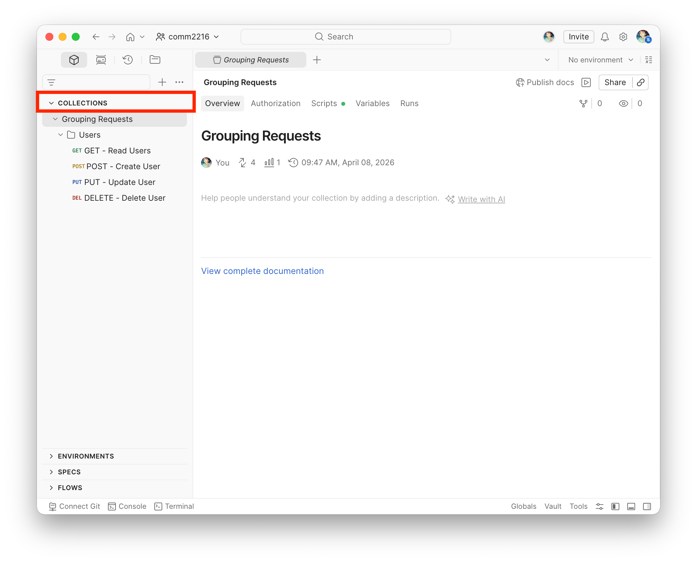
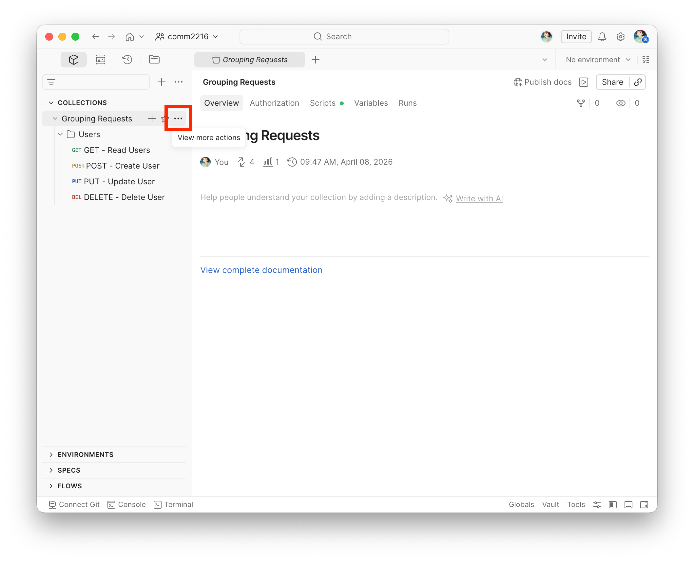
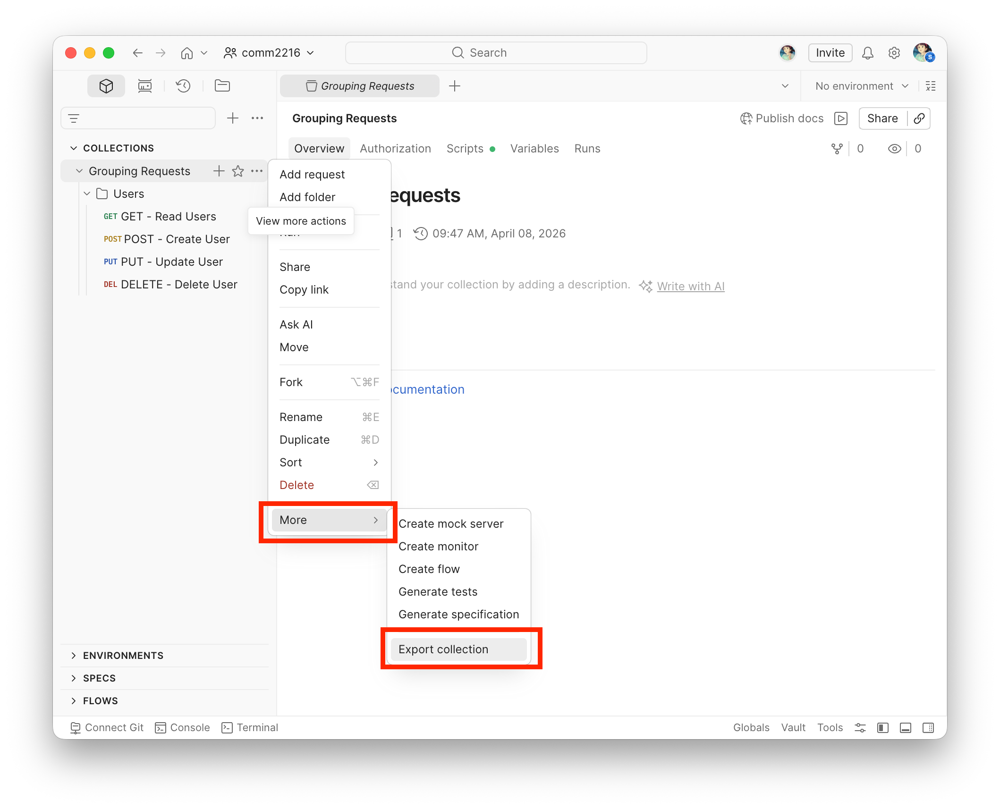
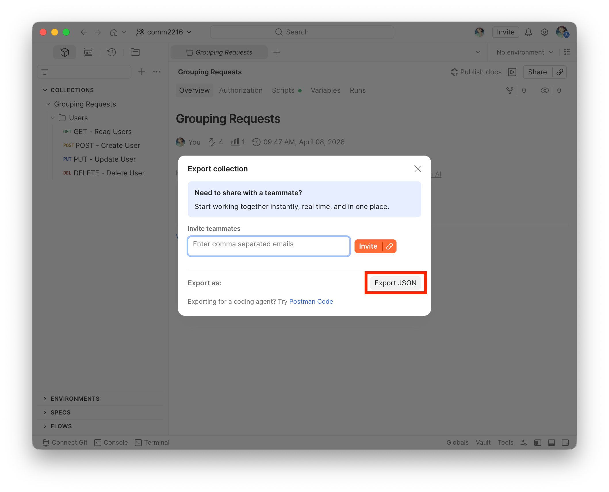
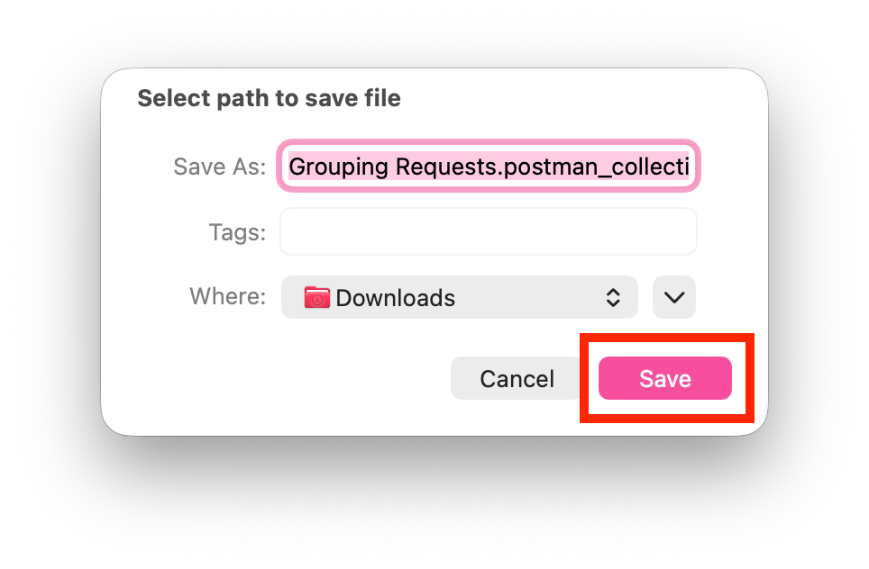
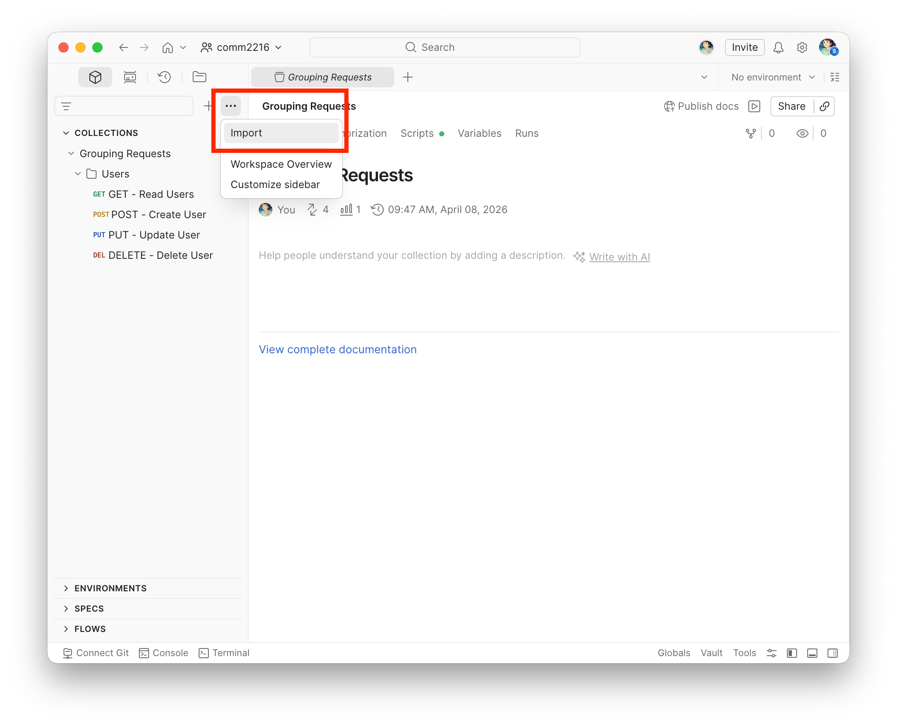
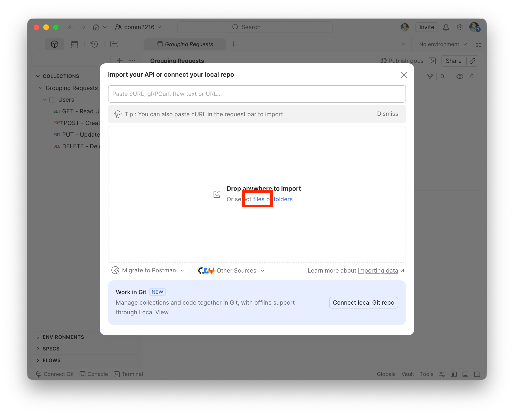
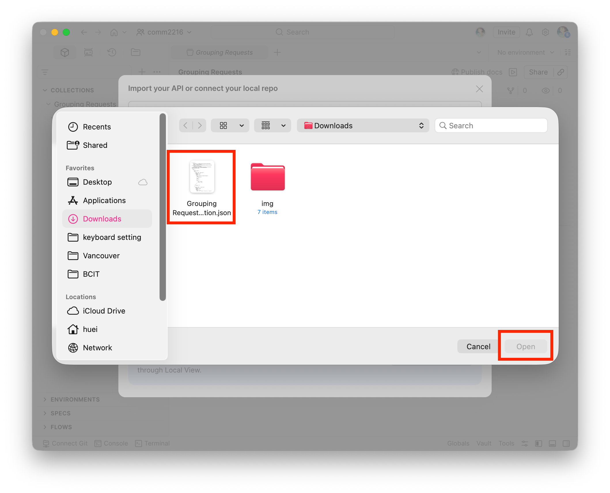
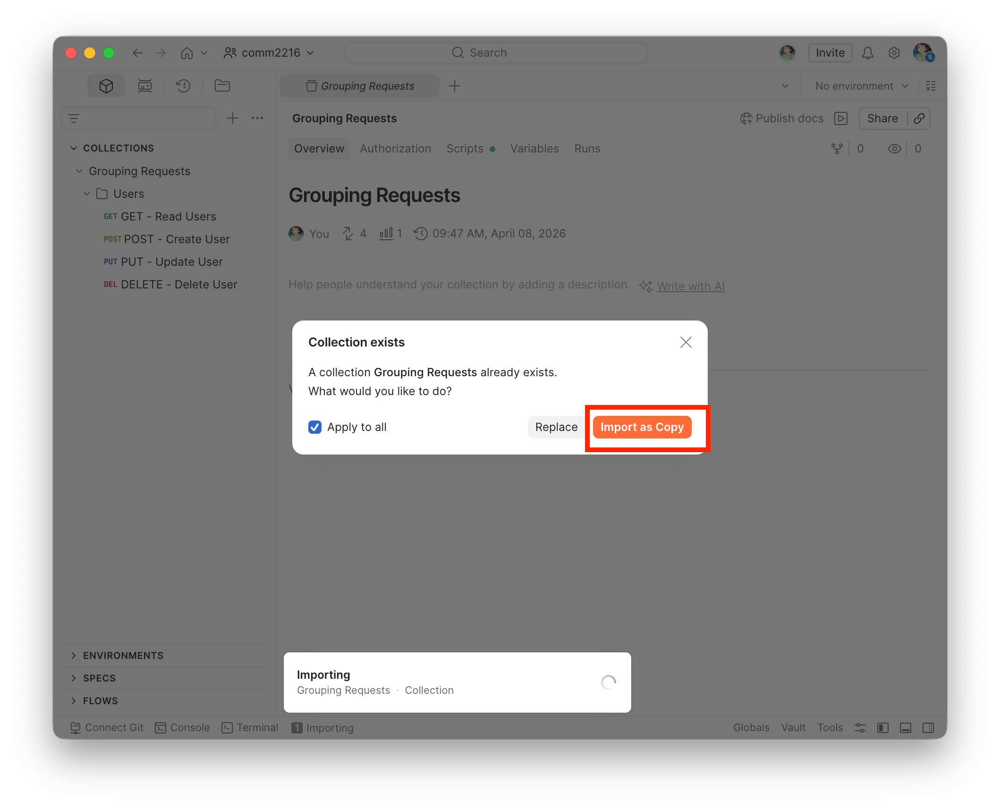
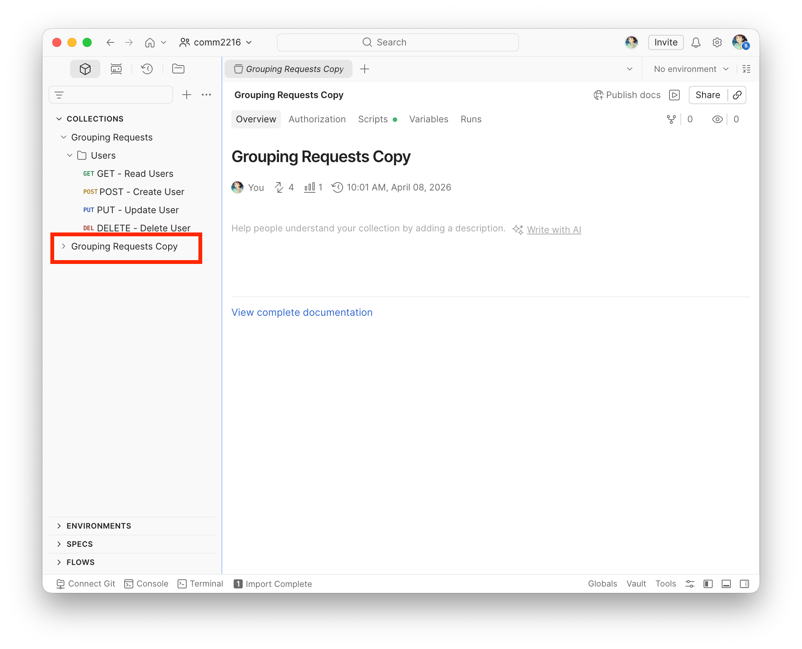

Managing Collections in Postman
Overview
Collections allow you to group, organize, and share related API requests. This task walks you through exporting a collection as a JSON file, importing it into Postman, and running all requests in a collection at once. By the end of this task, you will be able to transfer collections between workspaces and verify that imported requests execute correctly.
Exporting a Collection
Exporting a collection produces a JSON file that can be shared with teammates or stored in version control, making it easy to synchronize API workflows across different environments and team members.
- Click "COLLECTIONS" in the left sidebar.
-
Locate the collection you wish to export.
In this example, you will use the Grouping Requests collection which you created in Grouping Requests with Collections.

-
Hover over the collection name until the "⋯" icon appears.

-
Click the icon to open the context menu.
-
Hover over "More" and select "Export collection".

-
Click "Export JSON" in the bottom-right corner of the dialog that appears.

-
Select a destination folder to save the file.
-
Click "Save".

Your collection has been exported as a .json file and is ready to be shared or imported into another Postman workspace. Keep this file handy — you will use it in the next section.
Importing a Collection
The steps below use the .json file exported in the previous section. However, any valid Postman collection JSON file can be imported using the same process, including collections shared by teammates.
- Hover over the collection name until the "⋯" icon appears.
-
Click the "Import" button in the menu.

-
Click the "files" link in the dialog that appears to import from a local file.

-
Navigate to the folder containing your
.jsonfile -
Select it, and click "Open".

-
Click "Import as Copy" to import it without overwriting the existing collection.
If the collection already exists in your workspace, Postman will display this conflict dialog.

-
Check the collection that now appears in your "COLLECTIONS" sidebar, ready for use.

Your collection has been successfully imported into your Postman workspace. You can now access all of its saved requests and continue testing your APIs.
Conclusion
After completing this task, you should be able to:
- Export a collection as a
.jsonfile for sharing or backup - Import a collection from a local file into any Postman workspace
Managing collections effectively is essential for collaborating across teams and maintaining consistent API workflows. As your projects grow, being able to transfer, reuse, and troubleshoot collections will help you work more efficiently and avoid configuration errors.